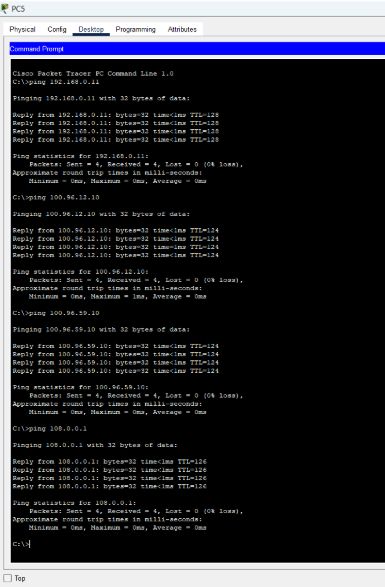
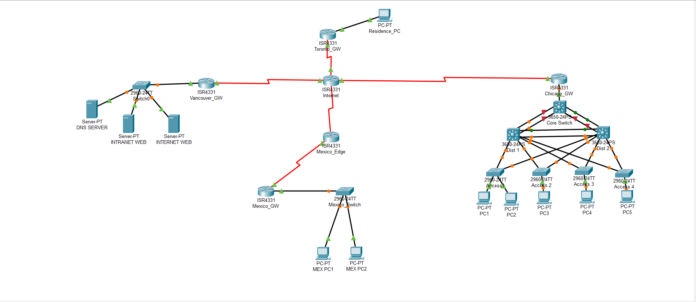
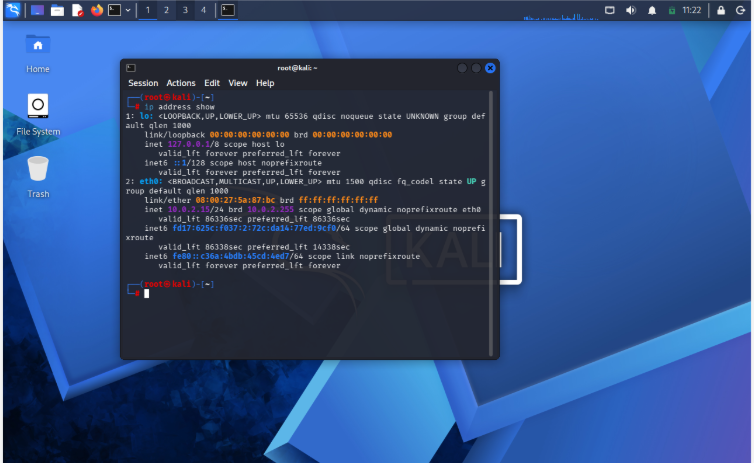
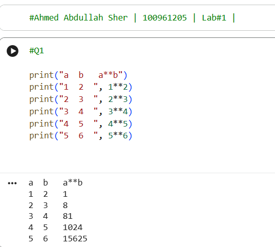
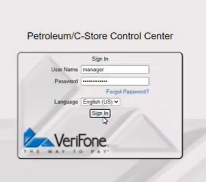
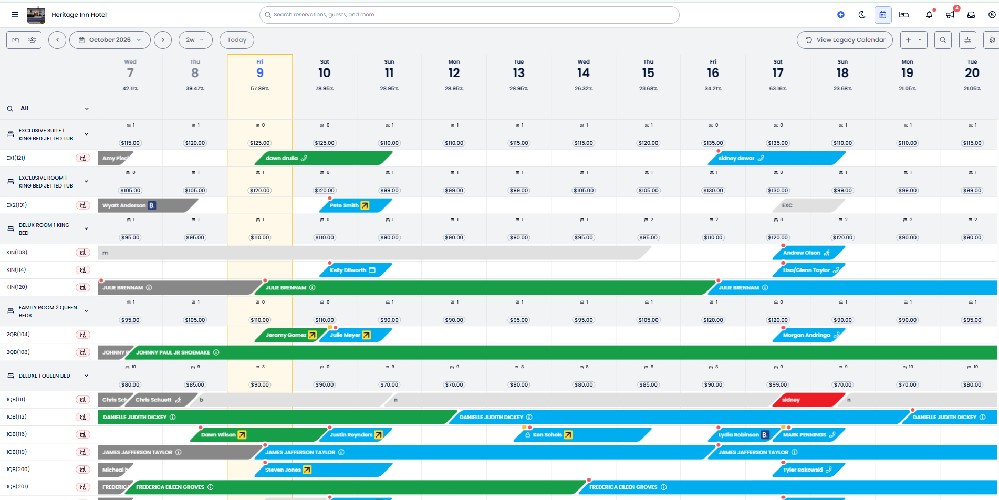

My First Networking Lab

This was my first networking lab, where I learned how to ping devices across a network. I was able to successfully test the connections between different devices.
Personal Portfolio
Here are some of the projects I have worked on through school and my own experiences. Each one has helped me learn something new.

This was my first networking lab, where I learned how to ping devices across a network. I was able to successfully test the connections between different devices.

I created a network topology connecting routers across different regions using BGP and EIGRP. This project helped me understand how routers communicate across different networks.

In this lab, I learned how website spoofing works. I practiced redirecting a request for ontariotechu.ca to yorku.ca in a controlled lab environment.

This was the first Python program I successfully wrote on my own. It was a simple exercise, but this is where it all started for me. More to come!

I successfully added the PLUs for an entire gas station into the VeriFone Commander system. This gave me experience working with software used in a real business.

I onboarded Heritage Inn Hotel onto Cloudbeds and helped set up the hotel's management system. It was a great experience getting everything ready for the hotel's daily operations.